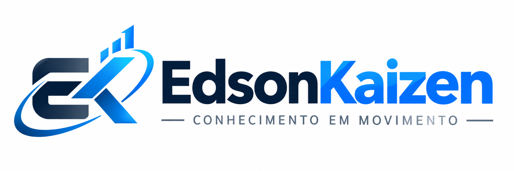
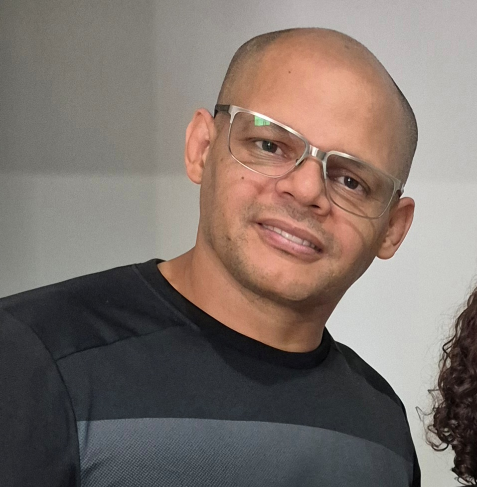

Tecnologia e Projetos
Desenvolvimento, inteligência artificial, automação e soluções práticas para problemas reais.

TECNOLOGIA · ENGENHARIA · GESTÃO · ANÁLISE E DECISÃO
Projetos, experiência e melhoria contínua aplicados à tecnologia, engenharia, gestão e à resolução de problemas reais.
“Kaizen é a busca constante por uma versão melhor de si.”— Edson
Desenvolvimento, inteligência artificial, automação e soluções práticas para problemas reais.
Experiência em engenharia clínica, gestão de ativos, manutenção e melhoria de processos.
Métodos para transformar dados em informação útil e apoiar decisões com segurança.
Conteúdos, aulas e experiências para formar pessoas e multiplicar conhecimento.
Web app com QR Code, rotas, orientação por voz e recursos de apoio à navegação interna hospitalar.
Conhecer projeto →Conteúdos, análises e experiências sobre tecnologia aplicada à saúde, manutenção e gestão de equipamentos.
Conhecer projeto →Conceito de ambiente de descompressão e bem-estar para espaços compactos.
Conhecer projeto →
Minha trajetória reúne tecnologia, engenharia, gestão e aprendizado contínuo. Tenho experiência profissional no ambiente hospitalar, formação em diversas áreas e interesse em transformar conhecimento em soluções práticas.
No EdsonKaizen, organizo projetos, análises e conteúdos que refletem essa jornada.
Conheça minha trajetória →Entre em contato para parcerias, projetos ou simplesmente para trocar ideias.
✉ Entrar em contato“Grandes resultados são fruto de pequenas melhorias feitas todos os dias.”— Edson